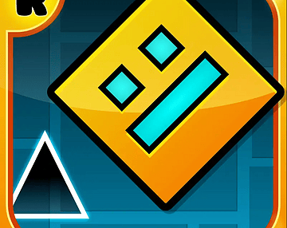

Arcade

GDWEB+ MOD.
Gioca a GDWeb+ Mod di Lollipop direttamente qui, senza lasciare la pagina.
Lollipop Mod | GDWeb+ Mod by Lollipop. Pagina del gioco su itch.io ↗
← Torna al catalogoArcade

Gioca a GDWeb+ Mod di Lollipop direttamente qui, senza lasciare la pagina.
Lollipop Mod | GDWeb+ Mod by Lollipop. Pagina del gioco su itch.io ↗
← Torna al catalogo